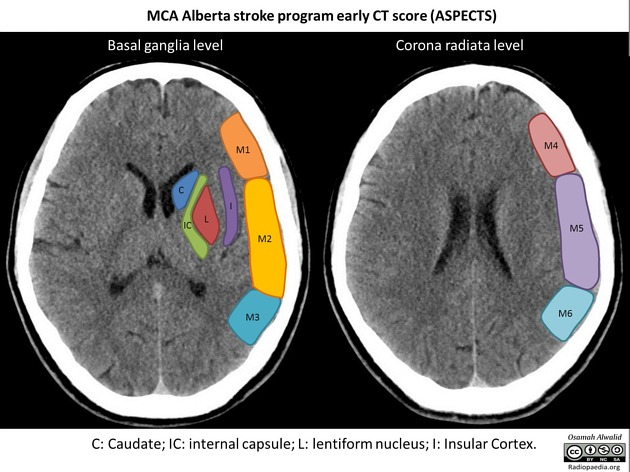

La puntuación ASPECTS (Alberta Stroke Program Early CT Score) es una herramienta cuantitativa de evaluación topográfica de 10 puntos, utilizada para valorar los cambios isquémicos tempranos en la tomografía computarizada (TC) craneal sin contraste en pacientes con ictus isquémico agudo de la circulación anterior (territorio de la arteria cerebral media).
Criterios de puntuación: A partir de una puntuación basal de 10 (TC normal), se resta 1 punto por cada una de las 10 regiones predefinidas que muestren evidencia de isquemia temprana (hipodensidad del parénquima o pérdida de diferenciación sustancia gris/blanca). Una puntuación de 0 indica isquemia difusa en todo el territorio de la ACM.
Correlación clínica: Generalmente, puntuaciones ASPECTS ≥ 6 indican una extensión moderada de la isquemia, asociándose a mejores resultados clínicos tras terapias de reperfusión (fibrinolisis IV o trombectomía mecánica). Puntuaciones ASPECTS ≤ 5 sugieren un infarto extenso ("core" grande).